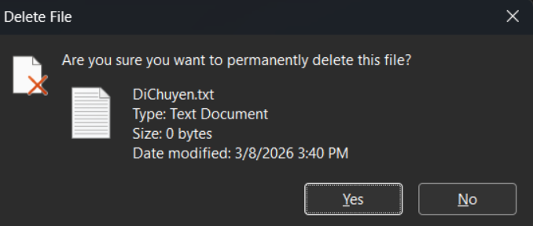
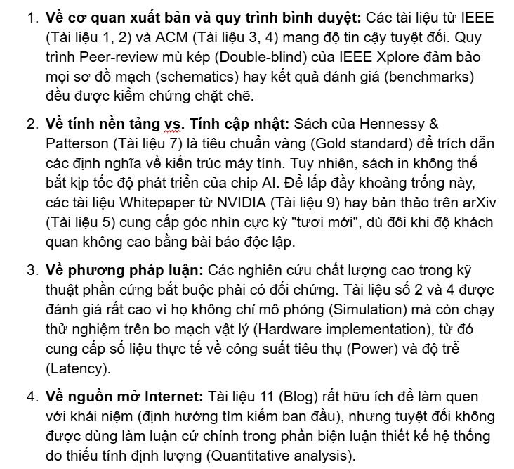
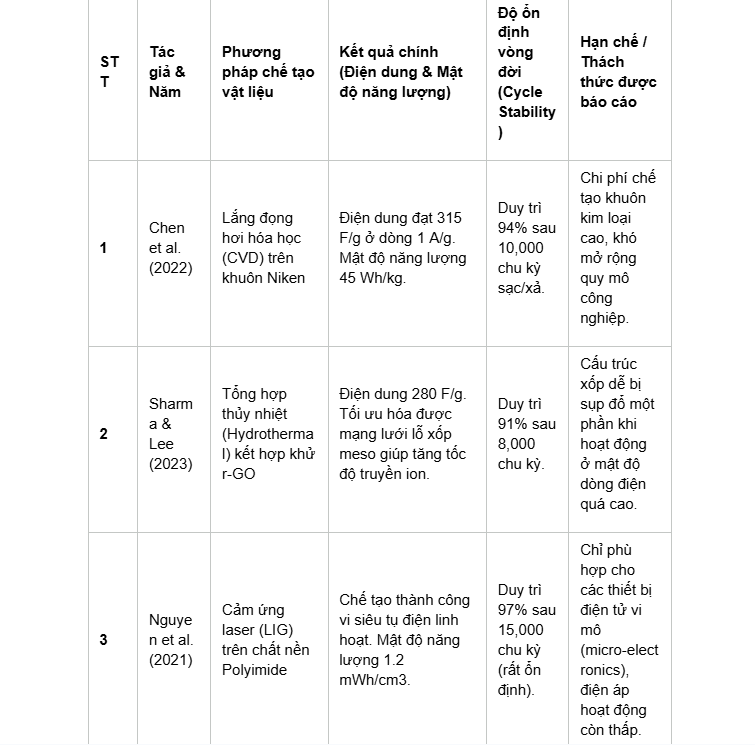
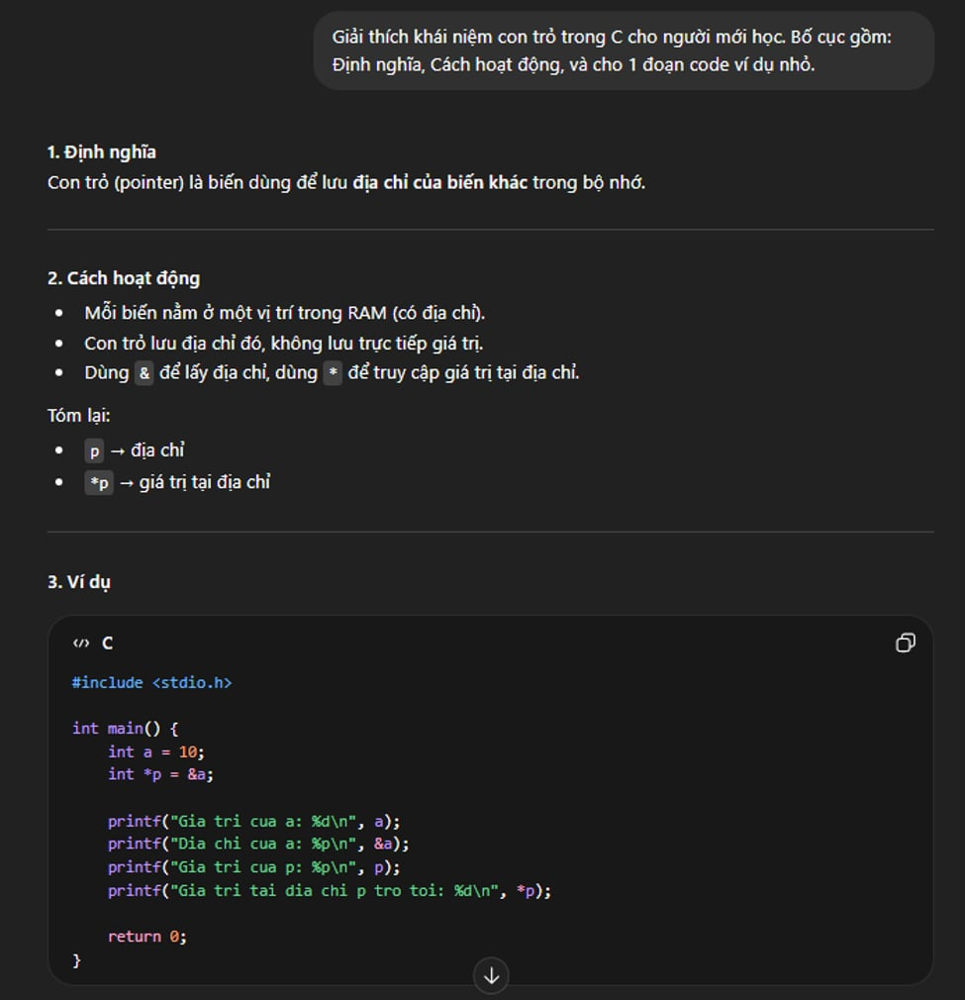
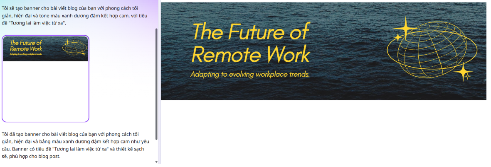
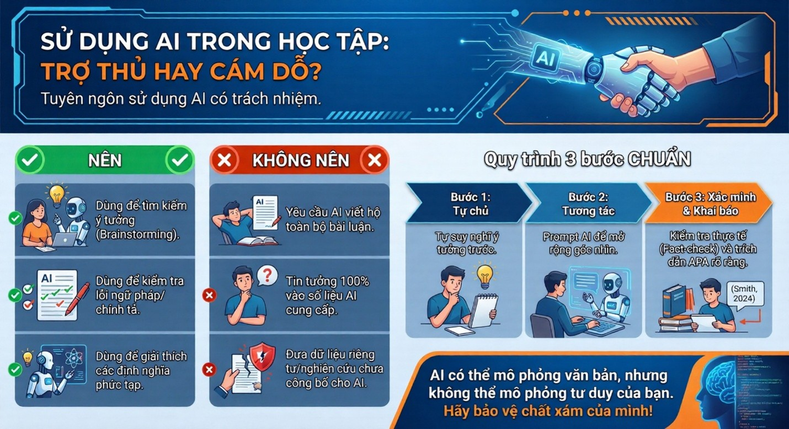

Giới thiệu bản thân
Tôi là sinh viên ngành Kỹ thuật Máy tính tại Trường Đại học Công nghệ. Định hướng của tôi là trở thành một kỹ sư nắm vững cả kiến thức phần cứng hệ thống lẫn tư duy lập trình phần mềm, đồng thời biết cách áp dụng tối ưu các công cụ số và trí tuệ nhân tạo vào nghiên cứu kỹ thuật chuyên sâu.
Các bài tập dự án
Bài 1: Thao tác cơ bản với tệp tin và thư mục
Mục tiêu: Nắm vững cách quản lý, tổ chức và cấu trúc dữ liệu khoa học trên hệ điều hành Windows để tối ưu hóa không gian lưu trữ tài liệu[cite: 260].
Quá trình thực hiện: Thực hiện các thao tác mở File Explorer, khởi tạo cây thư mục cá nhân ThucHanh_VuHungNam, tạo lập tệp tin văn bản GhiChu.txt và đổi tên thành GhiChuQuanTrong.txt. Triển khai tạo thư mục con TaiLieu, thực hành sao chép và di chuyển tệp tin DiChuyen.txt. Đồng thời, hoàn thiện kỹ năng quản lý dữ liệu qua các bước xóa tệp tin, xóa vĩnh viễn và khôi phục dữ liệu từ Thùng rác hệ thống.

Xem Báo cáo (PDF)Bài 2: Tìm kiếm và đánh giá thông tin học thuật
Mục tiêu: Nghiên cứu chuyên sâu về phương pháp đánh giá và tối ưu hóa hiệu năng của các kiến trúc phần cứng chuyên dụng bao gồm FPGA, ASIC và GPU trong việc tăng tốc xử lý thuật toán Học sâu (Deep Learning).
Quá trình thực hiện: Thiết lập phạm vi tra cứu tài liệu cập nhật giai đoạn 2021 - 2026 trên các cơ sở dữ liệu học thuật quốc tế hàng đầu như IEEE Xplore Digital Library, ScienceDirect, ACM Digital Library và các tài liệu kỹ thuật công nghiệp từ NVIDIA, AMD/Xilinx. Thực hiện tổng hợp, phân tích siêu dữ liệu và đánh giá hệ thống độ tin cậy của 11 nguồn tài liệu cốt lõi. Qua đó, rèn luyện tư duy phản biện định lượng dựa trên việc kết hợp giáo trình nền tảng và thông số đo đạc thực tế từ bo mạch vật lý.

Xem Báo cáo (PDF)Bài 3: Tổng quan tài liệu khoa học với công cụ AI
Mục tiêu: Khai thác công cụ trí tuệ nhân tạo chuyên biệt để nghiên cứu ứng dụng của cấu trúc Graphene ba chiều (3D Graphene) trong việc tối ưu hóa mật độ năng lượng và độ ổn định vòng đời của linh kiện siêu tụ điện (Supercapacitors).
Quá trình thực hiện: Sử dụng công cụ AI Elicit để thiết lập truy vấn học thuật chuyên sâu, áp dụng hệ thống bộ lọc để giới hạn thời gian xuất bản trong 5 năm gần đây (2019-2024), đồng thời loại bỏ các bài báo tổng quan để chọn lọc ra 6 nghiên cứu thực nghiệm chất lượng nhất. Tiến hành trích xuất tự động 5 trường thông tin thông số kỹ thuật cốt lõi để đối chiếu trực quan hiệu năng giữa các phương pháp chế tạo. Từ kết quả tổng hợp, phân tích và định vị khoảng trống nghiên cứu liên quan đến rào cản độ bền cơ học và chi phí sản xuất thương mại của vật liệu.

Xem Báo cáo (PDF)Bài 4: Tối ưu hóa Prompt Engineering trong học tập
Mục tiêu: Ứng dụng các kỹ thuật thiết kế câu lệnh nâng cao để biến AI tạo sinh thành một trợ lý hướng dẫn cá nhân hiệu quả trong việc tiếp cận các môn học chuyên ngành như Lập trình hệ thống ngôn ngữ C.
Quá trình thực hiện: Lựa chọn phân tích 3 tác vụ học tập có tính thách thức bao gồm tóm tắt tài liệu cấp phát bộ nhớ động, giải thích khái niệm trừu tượng về Con trỏ (Pointers) và xây dựng bộ câu hỏi ôn tập Active Recall. Thiết kế thử nghiệm và đối chiếu kết quả qua 3 cấp độ phát triển của câu lệnh (Cơ bản, Cải tiến, Nâng cao) bằng việc áp dụng phối hợp các kỹ thuật cấu trúc nâng cao như Role-prompting, Chain-of-Thought và Few-shot Examples. Từ thực nghiệm, đúc kết hệ thống nguyên tắc viết prompt tối ưu theo mô hình C.R.E.A.T.E.

Xem Báo cáo (PDF)Bài 5: Ứng dụng AI tạo sinh trong sáng tạo nội dung số
Mục tiêu: Phối hợp sức mạnh của nhiều mô hình trí tuệ nhân tạo tạo sinh nhằm tối ưu hóa quy trình sản xuất một sản phẩm truyền thông số toàn diện cả về chiều sâu nội dung lẫn thẩm mỹ trực quan.
Quá trình thực hiện: Triển khai xây dựng dự án bài viết Blog chuyên sâu kết hợp hình ảnh minh họa mang tên "Tương lai của Làm việc Từ xa: Định hình lại Không gian làm việc số" với tỷ lệ đóng góp thực tế là AI 35% và sinh viên 65%. Tích hợp nhịp nhàng 3 công cụ hàng đầu bao gồm Google Gemini để lập cấu trúc dàn ý logic, Midjourney để tạo ảnh khái niệm 3D độc quyền chất lượng cao, và Canva AI để dàn trang bộ thiết kế banner cùng infographic tóm tắt. Thực hiện các bước hậu kỳ xử lý lỗi chi tiết hình ảnh bằng Photoshop, sửa lỗi font typography tiếng Việt và phân tích phản biện sâu sắc các rào cản chi phí cùng vấn đề đạo đức về tính nguyên bản, bản quyền và định kiến dữ liệu.

Xem Báo cáo (PDF)Bài 6: Sử dụng AI có trách nhiệm và đạo đức trong học thuật
Mục tiêu: Nghiên cứu hệ thống quy định học đường về trí tuệ nhân tạo để xác định ranh giới đạo đức giữa hỗ trợ học tập hợp lệ và gian lận học thuật, đảm bảo tính liêm chính.
Quá trình thực hiện: Tiến hành đào sâu phân tích hướng dẫn sử dụng AI của Đại học Quốc gia Hà Nội (VNU) và đối chiếu đa chiều với chính sách của RMIT Việt Nam để xây dựng bảng nhận định hệ thống. Thực nghiệm quy trình khai báo minh bạch bằng cách ứng dụng AI hỗ trợ lập dàn ý cho bài tiểu luận Xã hội học môn chuyên ngành. Áp dụng nghiêm ngặt kỹ năng kiểm chứng độc lập (Fact-checking) bằng tài liệu uy tín của UNICEF để loại bỏ hoàn toàn hiện tượng ảo giác thông tin của mô hình. Từ đó, thiết lập bộ tuyên ngôn 6 nguyên tắc đạo đức cá nhân và hoàn thiện thiết kế sản phẩm Infographic trực quan "Trợ thủ hay Cám dỗ".

Xem Báo cáo (PDF)Tổng kết hành trình
Trải nghiệm xây dựng chuỗi dự án tích hợp và hoàn thiện không gian Portfolio số này đã làm thay đổi sâu sắc tư duy công nghệ của tôi. Tôi nhận thức rõ nét rằng trí tuệ nhân tạo không đóng vai trò thay thế con người, mà là một trợ lý đồng sáng tạo đắc lực (co-pilot). Sự hỗ trợ từ máy móc cho phép giải phóng sức lao động khỏi các tác vụ lặp đi lặp lại để chuyển dịch phần lớn thời gian sang việc kiểm chứng thực tế, biên tập chuyên sâu, rèn luyện tư duy phản biện và thổi hồn cá nhân nhằm bảo vệ tính nguyên bản tuyệt đối của chất xám.